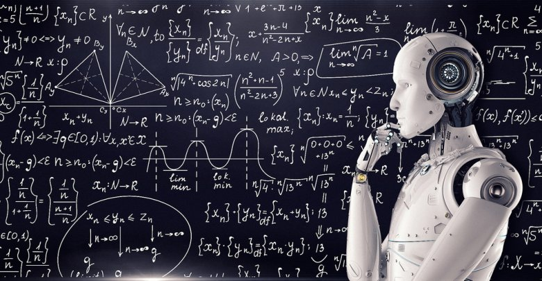

History Of Artificial Intelligence Research
Links

Thought-capable artificial beings appeared as storytelling devices in antiquity,[37] and have been common in fiction, as in Mary Shelley is Frankenstein or Karel Čapek is R.U.R.[38] These characters and their fates raised many of the same issues now discussed in the ethics of artificial intelligence.[32]
The study of mechanical or formal reasoning began with philosophers and mathematicians in antiquity. The study of mathematical logic led directly to Alan Turing is theory of computation, which suggested that a machine, by shuffling symbols as simple as 0 and 1 could simulate any conceivable act of mathematical deduction. This insight, that digital computers can simulate any process of formal reasoning, is known as the Church–Turing thesis.[39] Along with concurrent discoveries in neurobiology, information theory and cybernetics, this led researchers to consider the possibility of building an electronic brain. Turing proposed changing the question from whether a machine was intelligent, to whether or not it is possible for machinery to show intelligent behaviour.[40] The first work that is now generally recognized as AI was McCullouch and Pitts 1943 formal design for Turing-complete artificial neurons.[41]
The field of AI research was born at a workshop at Dartmouth College in 1956,[42] where the term Artificial Intelligence was coined by John McCarthy to distinguish the field from cybernetics and escape the influence of the cyberneticist Norbert Wiener.[43] Attendees Allen Newell (CMU), Herbert Simon (CMU), John McCarthy (MIT), Marvin Minsky (MIT) and Arthur Samuel (IBM) became the founders and leaders of AI research.[44] They and their students produced programs that the press described as astonishing [45] computers were learning checkers strategies (c. 1954)[46] (and by 1959 were reportedly playing better than the average human),[47] solving word problems in algebra, proving logical theorems (Logic Theorist, first run c. 1956) and speaking English.[48] By the middle of the 1960s, research in the U.S. was heavily funded by the Department of Defense[49] and laboratories had been established around the world.[50] AI is founders were optimistic about the future: Herbert Simon predicted, machines will be capable, within twenty years, of doing any work a man can do. Marvin Minsky agreed, writing, within a generation ... the problem of creating artificial intelligence will substantially be solved.[13]
They failed to recognize the difficulty of some of the remaining tasks. Progress slowed and in 1974, in response to the criticism of Sir James Lighthill[51] and ongoing pressure from the US Congress to fund more productive projects, both the U.S. and British governments cut off exploratory research in AI. The next few years would later be called an AI winter [15] a period when obtaining funding for AI projects was difficult.
In the early 1980s, AI research was revived by the commercial success of expert systems,[52] a form of AI program that simulated the knowledge and analytical skills of human experts. By 1985, the market for AI had reached over a billion dollars. At the same time, Japan is fifth generation computer project inspired the U.S and British governments to restore funding for academic research.[14] However, beginning with the collapse of the Lisp Machine market in 1987, AI once again fell into disrepute, and a second, longer-lasting hiatus began.[16]
The development of metal–oxide–semiconductor (MOS) very-large-scale integration (VLSI), in the form of complementary MOS (CMOS) transistor technology, enabled the development of practical artificial neural network (ANN) technology in the 1980s. A landmark publication in the field was the 1989 book Analog VLSI Implementation of Neural Systems by Carver A. Mead and Mohammed Ismail.[53]
In the late 1990s and early 21st century, AI began to be used for logistics, data mining, medical diagnosis and other areas.[36] The success was due to increasing computational power (see Moore is law and transistor count), greater emphasis on solving specific problems, new ties between AI and other fields (such as statistics, economics and mathematics), and a commitment by researchers to mathematical methods and scientific standards.[54] Deep Blue became the first computer chess-playing system to beat a reigning world chess champion, Garry Kasparov, on 11 May 1997.[55]